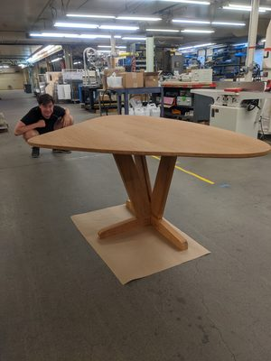
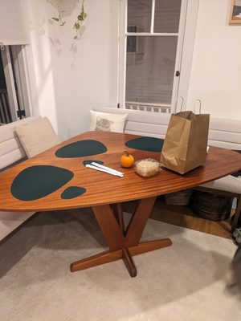
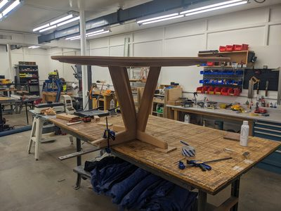

Furniture Design + Fabrication
2022
Rhino
Illustrator
CNC routing
Woodworking
Furniture
A custom dining table designed and fabricated for a private client. The design process moved between Rhino 3D modeling and hand sketching in Illustrator, working through joinery details and proportions in close collaboration with the client's space.
The table pairs CNC-cut structural connections with solid wood construction — letting the machine handle the precise geometry while the material and finish remain warm and handmade in character.


